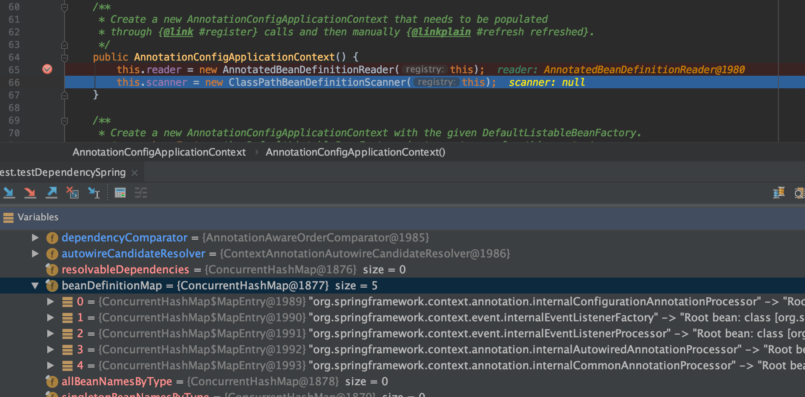
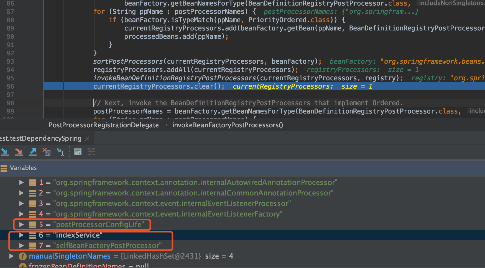
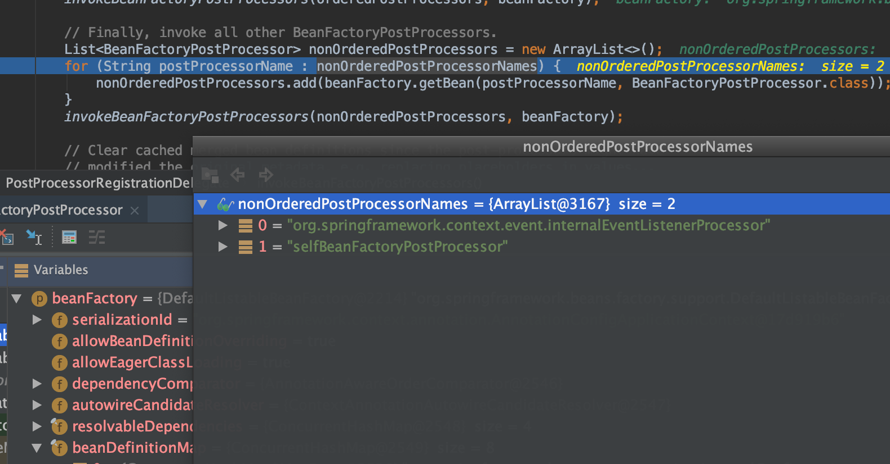
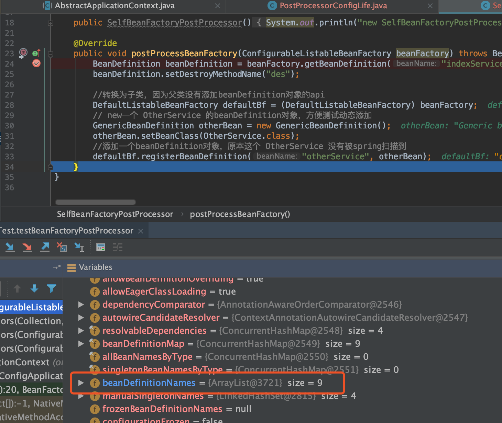
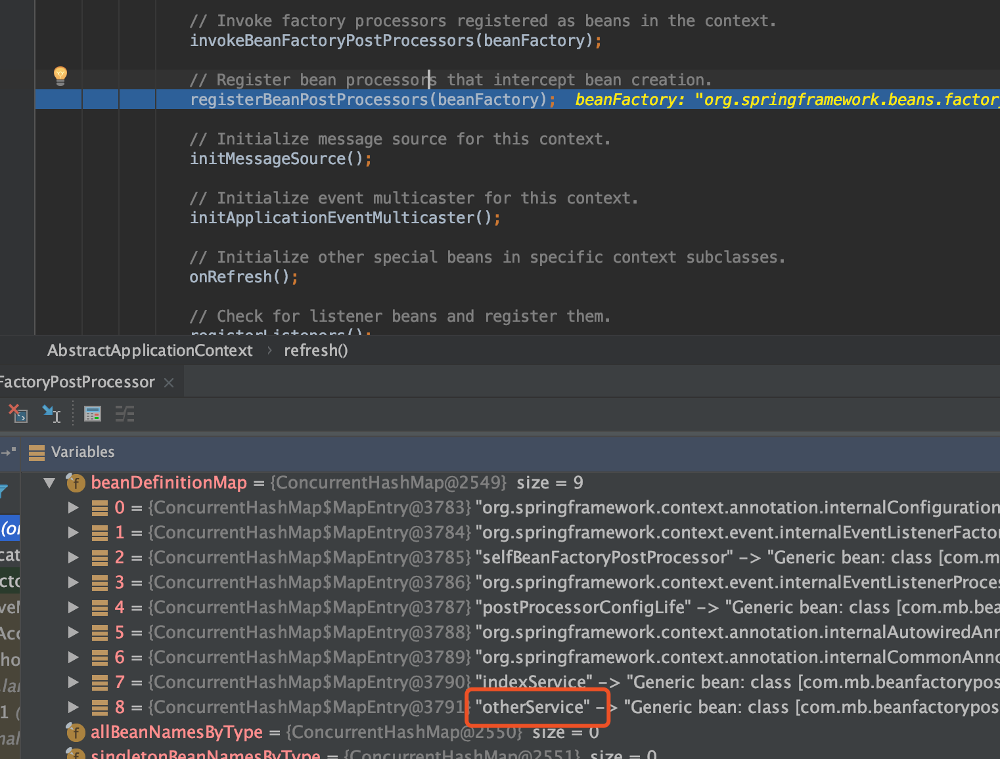

BeanFactoryPostProcessor
bean工厂后置处理器：干预beanFactory的工作流程（默认就是干预DefaultListableBeanFactory）
BeanFactoryPostProcessor是个接口，可以被继承，从而实现更多的功能，比如BeanDefinitionRegistryPostProcessor
public interface BeanDefinitionRegistryPostProcessor extends BeanFactoryPostProcessor {
/**
* Modify the application context's internal bean definition registry after its
* standard initialization. All regular bean definitions will have been loaded,
* but no beans will have been instantiated yet. This allows for adding further
* bean definitions before the next post-processing phase kicks in.
* @param registry the bean definition registry used by the application context
* @throws org.springframework.beans.BeansException in case of errors
*/
void postProcessBeanDefinitionRegistry(BeanDefinitionRegistry registry) throws BeansException;
}
其中一个实现类ConfigurationClassPostProcessor
/**
* {@link BeanFactoryPostProcessor} used for bootstrapping processing of
* {@link Configuration @Configuration} classes.
*
* <p>Registered by default when using {@code <context:annotation-config/>} or
* {@code <context:component-scan/>}. Otherwise, may be declared manually as
* with any other BeanFactoryPostProcessor.
*
* <p>This post processor is priority-ordered as it is important that any
* {@link Bean} methods declared in {@code @Configuration} classes have
* their corresponding bean definitions registered before any other
* {@link BeanFactoryPostProcessor} executes.
*
* @author Chris Beams
* @author Juergen Hoeller
* @author Phillip Webb
* @since 3.0
*/
public class ConfigurationClassPostProcessor implements BeanDefinitionRegistryPostProcessor,
PriorityOrdered, ResourceLoaderAware, BeanClassLoaderAware, EnvironmentAware {
beanFactoryPostProcessor的作用
- 修改BeanDefinition
- 注册BeanDefinition
- cglib代理
- 其它更多的扩展功能
Spring 内置的 bean

- org.springframework.context.annotation.ConfigurationClassPostProcessor
- org.springframework.context.event.DefaultEventListenerFactory
- org.springframework.context.event.EventListenerMethodProcessor
- org.springframework.beans.factory.annotation.AutowiredAnnotationBeanPostProcessor
- org.springframework.context.annotation.CommonAnnotationBeanPostProcessor
ConfigurationClassPostProcessor
ConfigurationClassPostProcessor实现了很多接口, 两个重要接口
- BeanDefinitionRegistryPostProcessor （继承了BeanFactoryPostProcessor）
- BeanFactoryPostProcessor
由于BeanDefinitionRegistryPostProcessor是继承了BeanFactoryPostProcessor所以也可以理解这是一个接口
refresh 12个方法中的invokeBeanFactoryPostProcessors(beanFactory);
显示遍历找到BeanDefinitionRegistryPostProcessor，目前就是一个ConfigurationClassPostProcessor，然后执行一次
执行到invokeBeanDefinitionRegistryPostProcessors(currentRegistryProcessors, registry);前后beanDefinitionMap有变化

可以看到执行完：自动被扫描的bean和一个自定义的BeanFactoryPostProcessor加入进来了
源码中：currentRegistryProcessors（就是ConfigurationClassPostProcessor），然后执行了ConfigurationClassPostProcessor的postProcessBeanDefinitionRegistry方法，该方法就是BeanDefinitionRegistryPostProcessor接口方法
- 获取全注解类的bean(@Configuration), 当然有全注解类且之前已经加入到
beanDefinitionMap中了，本例中就是postProcessorConfigLifebean - 根据全注解类bean构造一个
ConfigurationClassBeanDefinitionReader的reader直接读取到当次能读取到的bean加入到beanDefinitionMap中，显然第一次就是只能获取到indexService和selfBeanFactoryPostProcessor
在最后可以看到要去执行自定义的beanPostProcessor

可以看到这次执行的是BeanFactoryPostProcessor接口的postProcessBeanFactory方法

所以最后可以看到refresh的12个方法中的invokeBeanFactoryPostProcessors(beanFactory);执行完则完成了所有bean加入到了beanDefinitionMap中去了
